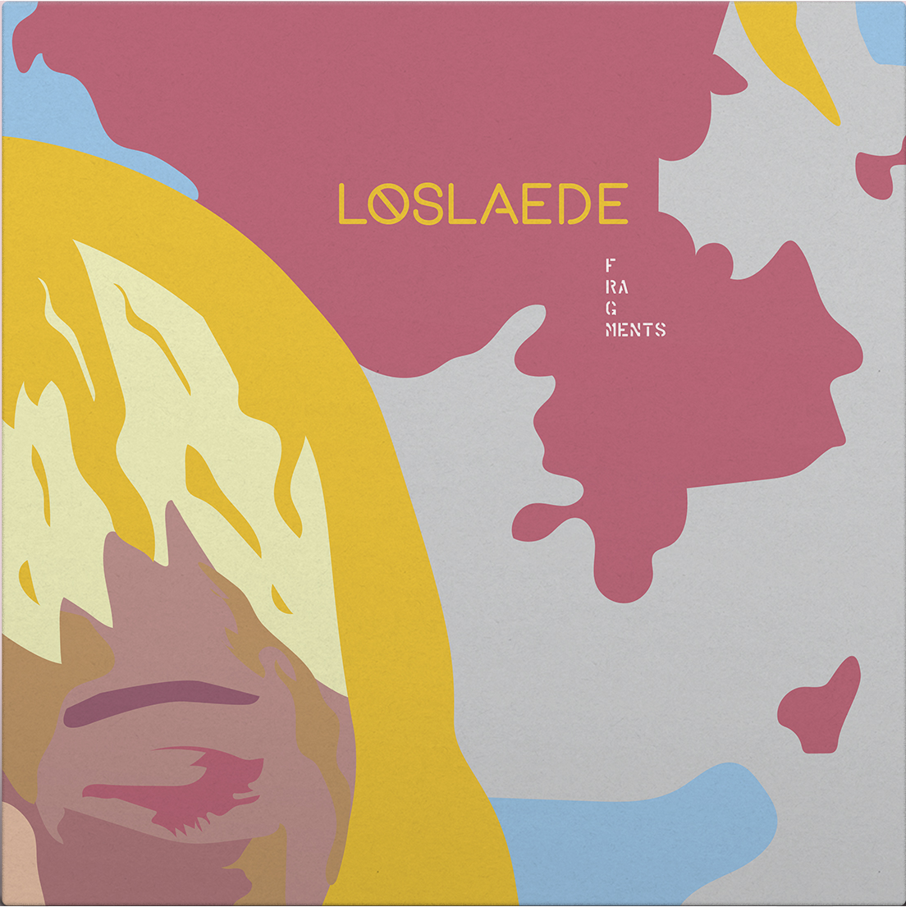

Laatste nieuws
10 vragen aan ons nieuwste talent, Blue Mizu
Blue Mizu is een 23 jarige Liquid Funk DJ, geboren en getogen in de Londense metropool. Deze DJ vindt zijn roots in een swingende underground jazzbar waar zijn vader de piano bespeelde. Sinds kort mogen we hem verwelkomen in de 'Hinshu-familie'. Wie is hij, hoe ontdekte hij zijn voorliefde voor Drum and Bass en hoe komt hij in België terecht? Wij vroegen het hem aan de hand van 10 vragen!
Release in de kijker
Laat alle voorgaande clichés over de DnB wereld achter je en laat je meeslepen met de unieke sound van Loslaede’s debuutplaat ‘Fragments’. De plaat is gebaseerd op de verschillende obstakels die ze moest overwinnen om het te maken als ‘female musician’ in de DnB-wereld. Met ‘Fragments’ neemt Loslaede je mee in de zoektocht naar haar haar eigen identiteit als artieste.
Alles wat je moet weten over Labelnight
9 juni is het dan zover. Hinshu Records organiseert haar eerste Labelnight. Drie feestruimtes, 3 subgenres, 3 gloednieuwe Drum and Bass artiesten, dat is Labelnight. Geniet van een avond vol Drum and Bass sfeer, met een internationale keuken en de beste en nieuwste muziek op het vlak van Neurofunk, Liquid Funk en Ambient. Leer mensen kennen van alle uithoeken van Europa en wie weet de wereld, alsook onze 3 artiesten, zelf afkomstig uit Berlijn, Londen en Kopenhagen. Geniet van je eigen favoriete genre of maak kennis met een van de andere subgenres, en leer zo niet alleen een geheel nieuwe stijl te appreciëren, maar ook een hele hoop nieuwe mensen kennen.
Hinshu Records, wie zijn we, wat doen we, wat drijft ons.
Hinshu Records is een gloednieuw Drum and Bass platenlabel
gevestigd in Brussel, België. Drie jongeren die jarenlang zelf
grote fan geweest zijn van Drum and Bass hebben besloten
om zelf een platenlabel op te richten. Want wat is er leuker
dan steeds met je favoriete muziek te mogen werken?
Vertaald naar het Nederlands is Hinshu het Japanse woord
voor ‘variëteit’. Dit is dan ook exact wat wij met ons label
willen vertegenwoordigen. ‘Hinshu Records’ staat voor
verscheidenheid, openheid, vernieuwing en experiment en
biedt zo een thuisbasis voor alle subgenres binnen de Drum
and Bass community.